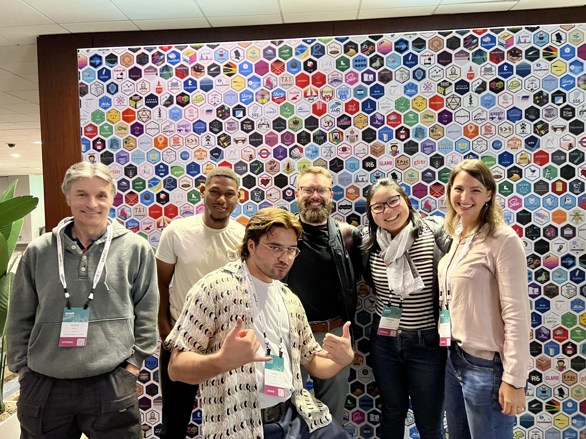
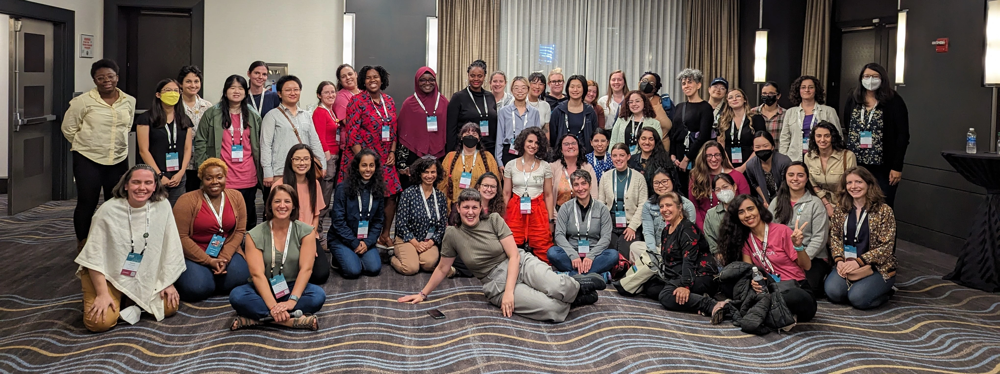
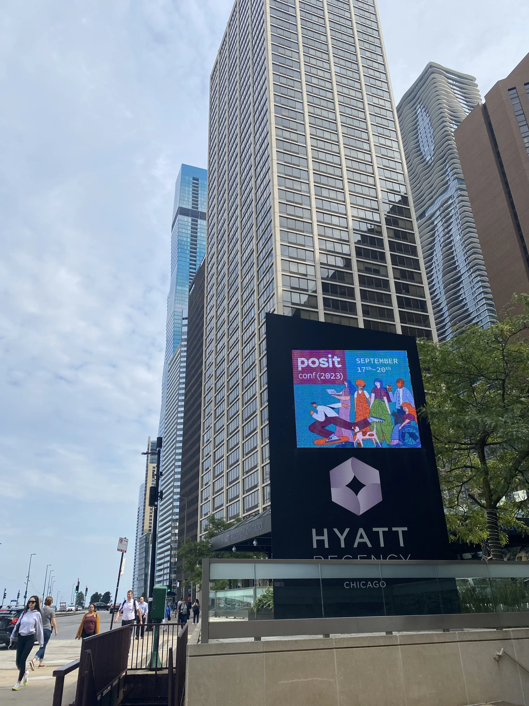

I was honored to be an Opportunity Scholar on my first posit::conf ever, which means admission tickets, hotel and flight expeses were covered by Posit. Considering that just the admission ticket is a lot of money, especially if you come from a country with a weak currency, I would probably never even consider attending the conference out of my own pocket (although now that I’ve been to one, I’m dying to go again next year).
So, what happened at posit::conf?
I was (quite literally) speechless for most of the event (more on that later). It was so inspiring to see other Opportunity Scholars giving talks, sharing meals with fellow R nerds, and talking about everything that R allows us to do, from awesome presentations to great dataviz and reproducible modeling. It was also so nice to find common interests with various people outside of strictly professional topics.
I don’t think I’ll be able to summarize all 4 days, but here goes nothing. The following is a short list of my personal highlights of the conference. If you want to have an overall view of Posit’s announcements, head over to Posit’s blog post where they listed their five takeaways from posit::conf(2023),
1. Quarto, quarto and more quarto
So many things are happening with Quarto! I’m especially excited to try out typst, which promises to be friendlier than LaTeX. I also finally started this blog and website, which had been in my plans for years.
2. DevOps for data scientists
DevOps was my choice for the first two days of workshops. It’s a shame that, because it was a two-day workshop, that meant I couldn’t do two different workshops, but I regret nothing. I learned so much (who’s intimidated by Docker now?? Not me, that’s for sure. Well, maybe just a little bit, but hey, baby steps), and once I got home, the project I was working on during the workshop evolved into this website. I bought the domain a few months back, and this was the push I needed to actually do something with it.
3. R-Ladies are awesome

I’m part of the local chapter of R-Ladies in Sao Paulo but had little to no interaction with the global team. The R-Ladies meetup on the last day was a great opportunity to better understand the workings of the organization and be inspired by awesome people who do such important work within the R community. More details of the meetup are available at this blog post.
4. The Discord server
Being in a place with hundreds of people can be a little overwhelming. I found that the posit::conf Discord server was a great way to start a conversation (kudos for the foodie channel!) in a more controlled environment – while also keeping track of sticker drops!
Tips and hot takes
There are also a few things that I wanted to share with other people planning to attend next year.
1. If you’re an introvert, know that there are others like you
Yes, you, the person standing awkwardly in a corner while everyone else is mingling and seems to be having a great time. There are other people doing exactly the same. Try to approach them with some questions, maybe? Here are some basic conversation starters once you’re past the “what do you do for work” stage that are not too boring but also not too unrealistic:
- What talks did you like the most so far?
- What did you learn that you are excited to try?
- What’s your favorite R package?
- What is the R community like where you’re based?
- Is it your first time in {city}? Do you have any plans apart from the conf?
2. Don’t assume people know the same things you do
Talking to people who are very knowledgeable can be either intimidating or mind-opening. I had a great time talking to a much more experienced developer who explained so much about their project in a friendly way that I felt welcomed to share my thoughts and ask questions. Be mindful not to be the arrogant person (even if unconsciously) who assumes people know what you’re talking about.
3. It’s OK to take a break
By the end of the second day, I was physically and mentally exhausted. To be honest, I was recovering from a cold a few days before my flight, and was feeling great, but two days of talking non-stop, some alcohol and early mornings made me so hoarse I could barely hear myself speak.
So I decided to skip some talks (that I knew would be recorded anyway, so I could catch up later) and rested. During one of my breaks, I had a lovely time making friendship bracelets at the arts and crafts table with other people who were recharging their social batteries. I’m also not much of a morning person, so I purposefully missed breakfast on the last day to have tea and some quiet time by myself outside the hotel.

It was absolutely amazing to attend posit::conf(2023). Next year it’s going to be in Seattle and I’m already thinking about how I’m going to be there. Fingers crossed for getting a talk acceppted! 🤞